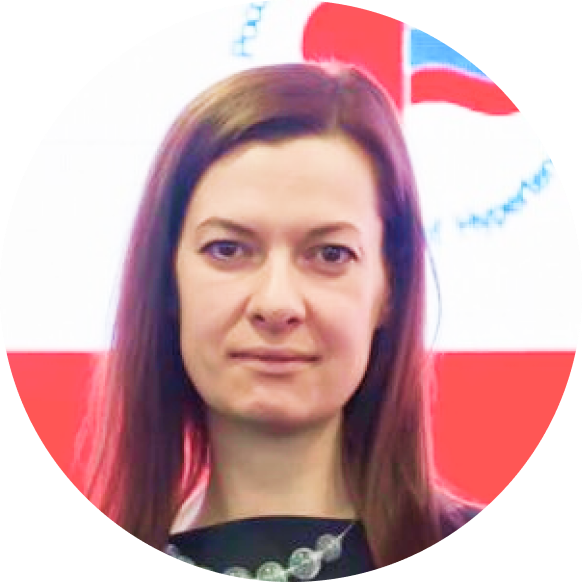

-
Обсуждение реальной ситуации и существующих проблем
идентификации пациентов с гиперурикемией в реальной клинической
практике в РФ.
-
Поиск возможных путей преодоления барьеров на пути пациента с ГУ.
-
Алгоритмы диагностики и лечения гиперурикемии.
.png)
.png)
Чазова Ирина Евгеньевна
Профессор, академик РАН, заместитель генерального директора
по научно-экспертной работе ФГБУ «НМИЦ кардиологии» МЗ России,
руководитель отдела Гипертоний, Президент Российского медицинского
общества по артериальной гипертонии.
Жернакова Юлия Валерьевна
Учёный секретарь Института клинической
кардиологии им. А.Л.Мясникова, профессор
кафедры кардиологии факультета
последипломного образования РНИМУ им.
Н.И.Пирогова
Кисляк Оксана Андреевна
Профессор, заведующая кафедрой факультетской
терапии ФГАОУ «Российский национальный
исследовательский медицинский университет
им.Н.И.Пирогова» МЗ РФ, член президиума Российского
медицинского общества по артериальной гипертонии
Миронова Ольга Юрьевна
Доцент кафедры факультетской терапии Института
клинической медицины им. Н. В. Склифосовского
ФГАОУ ВО «Первый МГМУ им. И.М. Сеченова
(Сеченовский Университет)» МЗ России

Блинова Наталия Владимировна
Старший научный сотрудник отдела
гипертонии ФГБУ НМИЦ кардиологии МЗ
России, секретарь Российского медицинского
общества по артериальной гипертонии